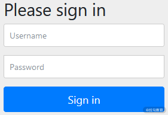
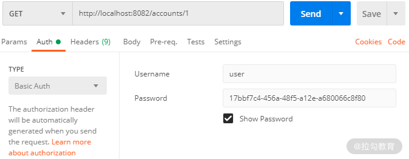
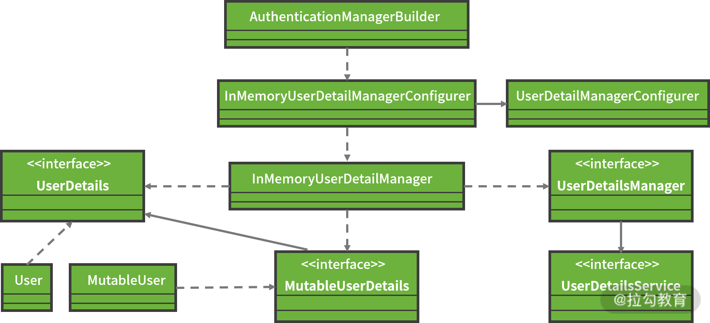
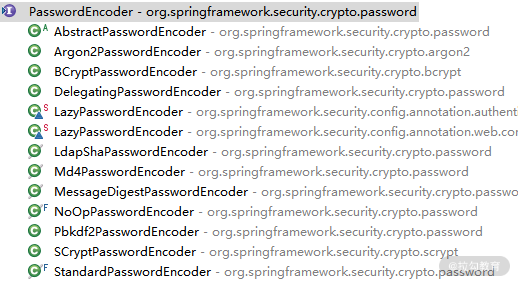

- 00 开篇词 从零开始：为什么要学习 Spring Boot？.md.html
- 01 家族生态：如何正确理解 Spring 家族的技术体系？.md.html
- 02 案例驱动：如何剖析一个 Spring Web 应用程序？.md.html
- 03 多维配置：如何使用 Spring Boot 中的配置体系？.md.html
- 04 定制配置：如何创建和管理自定义的配置信息？.md.html
- 05 自动配置：如何正确理解 Spring Boot 自动配置实现原理？.md.html
- 06 基础规范：如何理解 JDBC 关系型数据库访问规范？.md.html
- 07 数据访问：如何使用 JdbcTemplate 访问关系型数据库？.md.html
- 08 数据访问：如何剖析 JdbcTemplate 数据访问实现原理？.md.html
- 09 数据抽象：Spring Data 如何对数据访问过程进行统一抽象？.md.html
- 10 ORM 集成：如何使用 Spring Data JPA 访问关系型数据库？.md.html
- 11 服务发布：如何构建一个 RESTful 风格的 Web 服务？.md.html
- 12 服务调用：如何使用 RestTemplate 消费 RESTful 服务？.md.html
- 13 服务调用：如何正确理解 RestTemplate 远程调用实现原理？.md.html
- 14 消息驱动：如何使用 KafkaTemplate 集成 Kafka？.md.html
- 15 消息驱动：如何使用 JmsTemplate 集成 ActiveMQ？.md.html
- 16 消息驱动：如何使用 RabbitTemplate 集成 RabbitMQ？.md.html
- 17 安全架构：如何理解 Spring 安全体系的整体架构？.md.html
- 18 用户认证：如何基于 Spring Security 构建用户认证体系？.md.html
- 19 服务授权：如何基于 Spring Security 确保请求安全访问？.md.html
- 20 服务监控：如何使用 Actuator 组件实现系统监控？.md.html
- 21 指标定制：如何实现自定义度量指标和 Actuator 端点？.md.html
- 22 运行管理：如何使用 Admin Server 管理 Spring 应用程序？.md.html
- 23 数据测试：如何使用 Spring 测试数据访问层组件？.md.html
- 24 服务测试：如何使用 Spring 测试 Web 服务层组件？.md.html
- 结束语 以终为始：Spring Boot 总结和展望.md.html
18 用户认证：如何基于 Spring Security 构建用户认证体系？
在 17 讲中，我们梳理了 Web 应用程序的安全性需求，并引出了 Spring Security 这款 Spring 家族中专门用于处理安全性需求的开发框架，同时也明确了认证和授权是安全性框架的核心功能。
这一讲我们将先讨论与认证相关的话题，并给出 Spring Security 认证机制及其使用方法。因为 Spring Security 是日常开发过程中的基础组件，所以我们也会对如何实现数据加解密的过程做一些展开。
在 Spring Boot 中整合 Spring Security 框架的方式非常简单，我们只需要在 pom 文件中引入 spring-boot-starter-security 依赖即可，这与以往需要提供很多配置才能与 Spring Security 完成集成的开发过程不同，如下代码所示：
<dependency>
<groupId>org.springframework.boot</groupId>
<artifactId>spring-boot-starter-security</artifactId>
</dependency>
请注意，只要我们在代码工程中添加了上述依赖，包含在该工程中的所有 HTTP 端点都将被保护起来。
例如，在 SpringCSS 案例的 account-service 中，我们知道存在一个 AccountController ，且它暴露了一个“accounts/ /{accountId}”端点。现在，我们启动 account-service 服务并访问上述端点，弹出了如下图所示的界面内容：

添加 Spring Security 之后自动出现的登录界面
同时，在系统的启动控制台日志中，我们发现了如下所示的新的日志信息。
Using generated security password: 17bbf7c4-456a-48f5-a12e-a680066c8f80
在这里可以看到，Spring Security 为我们自动生成了一个密码，我们可以基于“user”这个账号及上述密码登录这个界面，抽空你也可以尝试下。
如果我们使用了 Postman 可视化 HTTP 请求工具，可以设置授权类型为“Basic Auth”并输入对应的用户名和密码完成对 HTTP 端点的访问，设置界面如下图所示：

使用 Postman 来完成认证信息的设置
事实上，在引入 spring-boot-starter-security 依赖之后，Spring Security 会默认创建一个用户名为“user”的账号。很显然，每次启动应用时，通过 Spring Security 自动生成的密码都会有所变化，因此它不适合作为一种正式的应用方法。
如果我们想设置登录账号和密码，最简单的方式是通过配置文件。例如，我们可以在 account-service 的 application.yml 文件中添加如下代码所示的配置项：
spring:
security:
user:
name: springcss
password: springcss_password
重启 account-service 服务后，我们就可以使用上述用户名和密码完成登录。
虽然基于配置文件的用户信息存储方案简单且直接，但是显然缺乏灵活性，因此 Spring Security 为我们提供了多种存储和管理用户认证信息的方案，我们一起来看一下。
配置 Spring Security
在 SpringSecurity 中，初始化用户信息所依赖的配置类是 WebSecurityConfigurer 接口，该接口实际上是一个空接口，继承了更为基础的 SecurityConfigurer 接口。
在日常开发中，我们往往不需要自己实现这个接口，而是使用 WebSecurityConfigurerAdapter 类简化该配置类的使用方式。比如我们可以通过继承 WebSecurityConfigurerAdapter 类并且覆写其中的 configure(AuthenticationManagerBuilder auth) 的方法完成配置工作。
关于 WebSecurityConfigurer 配置类，首先我们需要明确配置的内容。实际上，初始化所使用的用户信息非常简单，只需要指定用户名（Username）、密码（Password）和角色（Role）这三项数据即可。
在 WebSecurityConfigurer 类中，使用 AuthenticationManagerBuilder 类创建一个 AuthenticationManager 就能够轻松实现基于内存、LADP 和 JDBC 的验证。
接下来，我们就围绕 AuthenticationManagerBuilder 提供的功能实现多种用户信息存储方案。
使用基于内存的用户信息存储方案
我们先来看看如何使用 AuthenticationManagerBuilder 完成基于内存的用户信息存储方案。
实现方法是调用 AuthenticationManagerBuilder 的 inMemoryAuthentication 方法，示例代码如下所示：
@Override
protected void configure(AuthenticationManagerBuilder builder) throws Exception {
builder.inMemoryAuthentication()
.withUser("springcss_user").password("password1")
.roles("USER")
.and()
.withUser("springcss_admin").password("password2")
.roles("USER", "ADMIN");
}
从上面的代码中，我们看到系统中存在"springcss _user"和"springcss _admin"这两个用户，其密码分别是"password1"和"password2"，分别代表着普通用户 USER 及管理员 ADMIN 这两个角色。
在 AuthenticationManagerBuilder 中，上述 inMemoryAuthentication 的方法的实现过程如下代码所示：
public InMemoryUserDetailsManagerConfigurer<AuthenticationManagerBuilder> inMemoryAuthentication()
throws Exception {
return apply(new InMemoryUserDetailsManagerConfigurer<>());
}
这里的 InMemoryUserDetailsManagerConfigurer 内部又使用到了 InMemoryUserDetailsManager 对象，而通过深入该类，我们可以获取 Spring Security 中与用户认证相关的一大批核心对象，它们之间的关系如下图所示：

Spring Security 中用户认证相关类结构图
首先，我们来看上图中代表用户详细信息的 UserDetails 接口，如下代码所示：
public interface UserDetails extends Serializable {
//获取该用户的权限信息
Collection<? extends GrantedAuthority> getAuthorities();
//获取密码
String getPassword();
//获取用户名
String getUsername();
//判断该账户是否已失效
boolean isAccountNonExpired();
//判断该账户是否已被锁定
boolean isAccountNonLocked();
//判断该账户的凭证信息是否已失效
boolean isCredentialsNonExpired();
//判断该用户是否可用
boolean isEnabled();
}
在上述代码中，我们发现 UserDetails 存在一个子接口 MutableUserDetails，从命名上不难看出，后者是一个可变的 UserDetails，而可变的内容就是密码。
关于 MutableUserDetails 接口的定义如下代码所示：
interface MutableUserDetails extends UserDetails {
//设置密码
void setPassword(String password);
}
在 Spring Security 中，针对 UserDetails 还存在一个专门的 UserDetailsService，该接口专门用来管理 UserDetails，它的定义如下代码所示：
public interface UserDetailsService {
//根据用户名获取用户信息
UserDetails loadUserByUsername(String username) throws UsernameNotFoundException;
}
而 UserDetailsManager 继承了 UserDetailsService，并提供了一批针对 UserDetails 的操作接口，如下代码所示：
public interface UserDetailsManager extends UserDetailsService {
//创建用户
void createUser(UserDetails user);
//更新用户
void updateUser(UserDetails user);
//删除用户
void deleteUser(String username);
//修改密码
void changePassword(String oldPassword, String newPassword);
//判断指定用户名的用户是否存在
boolean userExists(String username);
}
介绍完 UserDetailsManager 后，我们再回到 InMemoryUserDetailsManager 类，它实现了 UserDetailsManager 接口中的所有方法，这些方法主要用来对用户信息进行维护，从而形成一条代码支线。
为了完成用户信息的配置，还存在另外一条代码支线，即 UserDetailsManagerConfigurer。该类维护了一个 UserDetails 列表，并提供了一组 withUser 方法完成用户信息的初始化，如下代码所示：
private final List<UserDetails> users = new ArrayList<>();
public final C withUser(UserDetails userDetails) {
this.users.add(userDetails);
return (C) this;
}
从上述代码中，我们看到 withUser 方法返回的是一个 UserDetailsBuilder 对象，通过该对象可以实现类似 .withUser("springcss_user").password("password1").roles("USER") 这样的链式语法，从而完成用户信息的设置。
请注意，这里的 .roles() 方法实际上是 .authorities() 方法的一种简写，因为 Spring Security 会在每个角色名称前自动添加“ROLE_”前缀，我们可以通过如下所示的代码实现同样的功能：
@Override
protected void configure(AuthenticationManagerBuilder builder) throws Exception {
builder.inMemoryAuthentication()
.withUser("springcss_user").password("password1")
.authorities("ROLE_USER")
.and()
.withUser("springcss_admin").password("password2")
.authorities("ROLE_USER", "ROLE_ADMIN");
}
我们可以看到，基于内存的用户信息存储方案也比较简单，但是由于用户信息写死在代码中，因此同样缺乏灵活性。
接下来我们将引出另一种更为常见的用户信息存储方案——数据库存储。
使用基于数据库的用户信息存储方案
既然是将用户信息存储在数据库中，我们势必需要创建表结构。因此，在 Spring Security 的源文件中，我们可以找到对应的 SQL 语句，如下代码所示：
create table users(username varchar_ignorecase(50) not null primary key,password varchar_ignorecase(500) not null,enabled boolean not null);
create table authorities (username varchar_ignorecase(50) not null,authority varchar_ignorecase(50) not null,constraint fk_authorities_users foreign key(username) references users(username));
create unique index ix_auth_username on authorities (username,authority);
一旦在自己的数据库中创建了这两张表，且添加了相应数据，我们就可以直接注入一个 DataSource 对象查询用户数据，如下代码所示：
@Autowired
DataSource dataSource;
@Override
protected void configure(AuthenticationManagerBuilder auth) throws Exception {
auth.jdbcAuthentication().dataSource(dataSource)
.usersByUsernameQuery("select username, password, enabled from Users " + "where username=?")
.authoritiesByUsernameQuery("select username, authority from UserAuthorities " + "where username=?")
.passwordEncoder(new BCryptPasswordEncoder());
}
这里使用了 AuthenticationManagerBuilder 的 jdbcAuthentication 方法配置数据库认证方式，而内部则使用了 JdbcUserDetailsManager 工具类。
围绕 JdbcUserDetailsManager 整条代码链路的类层结构与 InMemoryUserDetailsManager 非常一致，在该类中定义了各种用户数据库查询的 SQL 语句，以及使用 JdbcTemplate 完成数据库访问的具体实现方法。这里我们不再具体展开，你可以对照前面给出的 InMemoryUserDetailsManager 类层结构图进行分析。
注意，在上述方法中，通过 jdbcAuthentication() 方法验证用户信息时，我们必须集成加密机制，即使用 passwordEncoder() 方法嵌入一个 PasswordEncoder 接口的实现类。
在 Spring Security 中，PasswordEncoder 接口代表一种密码编码器，定义如下代码所示：
public interface PasswordEncoder {
//对原始密码进行编码
String encode(CharSequence rawPassword);
//对提交的原始密码与库中存储的加密密码进行比对
boolean matches(CharSequence rawPassword, String encodedPassword);
//判断加密密码是否需要再次进行加密，默认返回false
default boolean upgradeEncoding(String encodedPassword) {
return false;
}
}
Spring Security 中内置了一大批 PasswordEncoder 接口的实现类，如下图所示：

Spring Security 中的 PasswordEncoder 实现类
上图中，比较常用的算法如 SHA-256 算法的 StandardPasswordEncoder、bcrypt 强哈希算法的 BCryptPasswordEncoder 等。而在实际案例中，我们使用的是 BCryptPasswordEncoder，它的 encode 方法如下代码所示：
public String encode(CharSequence rawPassword) {
String salt;
if (random != null) {
salt = BCrypt.gensalt(version.getVersion(), strength, random);
} else {
salt = BCrypt.gensalt(version.getVersion(), strength);
}
return BCrypt.hashpw(rawPassword.toString(), salt);
}
可以看到，上述 encode 方法执行了两个步骤，第一步是生成盐，第二步是根据盐和明文密码生成最终的密文密码。
实现定制化用户认证方案
通过前面内容的分析，我们明确了用户信息存储的实现过程实际上是完全可定制化，而 Spring Security 所做的工作只是把常见、符合一般业务场景的实现方式嵌入框架中。如果存在特殊的场景，开发人员完全可以通过自定义用户信息存储方案进行实现。
在前面的内容中，我们介绍了 UserDetails 接口代表用户详细信息，而 UserDetailsService 接口负责对 UserDetails 进行各种操作 。因此，实现定制化用户认证方案的关键是实现 UserDetails 和 UserDetailsService 这两个接口。
扩展 UserDetails
扩展 UserDetails 的方法的实质是直接实现该接口，例如我们可以构建如下所示的 SpringCssUser 类：
public class SpringCssUser implements UserDetails {
private static final long serialVersionUID = 1L;
private Long id;
private final String username;
private final String password;
private final String phoneNumber;
//省略getter/setter
@Override
public String getUsername() {
return username;
}
@Override
public String getPassword() {
return password;
}
@Override
public Collection<? extends GrantedAuthority> getAuthorities() {
return Arrays.asList(new SimpleGrantedAuthority("ROLE_USER"));
}
@Override
public boolean isAccountNonExpired() {
return true;
}
@Override
public boolean isAccountNonLocked() {
return true;
}
@Override
public boolean isCredentialsNonExpired() {
return true;
}
@Override
public boolean isEnabled() {
return true;
}
}
显然，这里我们使用了一种更简单的方法满足 UserDetails 中各个接口的实现需求。一旦我们构建了一个 SpringCssUser 类，就可以创建对应的表结构存储类中所定义的字段。同时，我们也可以基于 Spring Data JPA 创建一个自定义的 Repository，如下代码所示：
public interface SpringCssUserRepository extends CrudRepository<SpringCssUser, Long> {
SpringCssUser findByUsername(String username);
}
SpringCssUserRepository 扩展了 CrudRepository 接口，并提供了一个方法名衍生查询 findByUsername。
关于 Spring Data JPA 的使用方法，你还可以回顾《ORM 集成：如何使用 Spring Data JPA 访问关系型数据库？》。
扩展 UserDetailsService
接着，我们来实现 UserDetailsService 接口，如下代码所示：
@Service
public class SpringCssUserDetailsService
implements UserDetailsService {
@Autowired
private SpringCssUserRepository repository;
@Override
public UserDetails loadUserByUsername(String username)
throws UsernameNotFoundException {
SpringCssUser user = repository.findByUsername(username);
if (user != null) {
return user;
}
throw new UsernameNotFoundException(
"SpringCSS User '" + username + "' not found");
}
}
在 UserDetailsService 接口中，我们只需要实现 loadUserByUsername 方法就行。因此，我们可以基于 SpringCssUserRepository 的 findByUsername 方法，再根据用户名从数据库中查询数据。
整合定制化配置
最后，我们再次回到 SpringCssSecurityConfig 类。
这次我们将使用自定义的 SpringCssUserDetailsService 完成用户信息的存储和查询，此时我们只需要对配置策略做一些调整，调整后的完整 SpringCssSecurityConfig 类如下代码所示：
@Configuration
public class SpringCssSecurityConfig extends WebSecurityConfigurerAdapter {
@Autowired
SpringCssUserDetailsService springCssUserDetailsService;
@Override
protected void configure(AuthenticationManagerBuilder auth) throws Exception {
auth.userDetailsService(springCssUserDetailsService);
}
}
这里我们注入了 SpringCssUserDetailsService，并将其添加到 AuthenticationManagerBuilder 中，这样 AuthenticationManagerBuilder 将基于自定义的 SpringCssUserDetailsService 完成 UserDetails 的创建和管理。
小结与预告
这一讲我们详细介绍了如何使用 Spring Security 构建用户认证体系的系统方法。
一方面，我们可以分别基于内存和数据库方案存储用户信息，这两种方案都是 Spring Security 内置的。另一方面，我们可以通过扩展 UserDetails 接口的方式实现定制化用户的认证方案。同时，为了方便你理解和掌握这部分内容，我们还梳理了与用户认证相关的核心类。
介绍完用户认证信息后，19 讲我们将介绍如何基于 Spring Security 确保 Web 请求的安全访问。